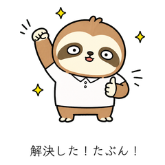

About Yuruaru Studio
共感できる、
使いやすいひとこと。
仕事仲間との雑談にも、友人との会話にも。疲れた日、うまくいかない日、ちょっとだけツッコミたい日に使える表現をつくっています。
First release
限界なまけ情シスの日常
問い合わせ対応に追われるナマケモノ情シス「なましす」。再起動、デバッグ、コンフリクト、今日も彼は疲弊に揉まれ、それでもなんとか生きている。
Coming next
第二弾を企画中です。
なましすの次なる「あるある」を、ただいま準備中。新作のお知らせは販売開始後に更新します。